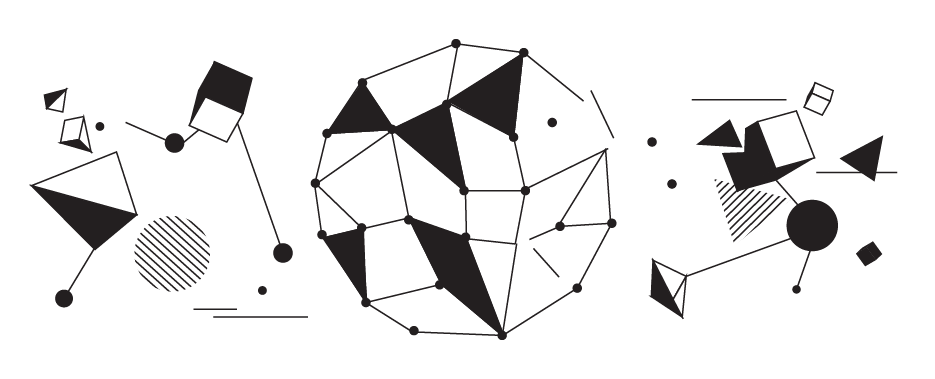

Сейчас, наверное, практически любой программист, который разрабатывает на платформе .NET, скажет, что ничего проще этого паттерна нет. Что это известный из известнейших шаблонов, которые применяются на платформе. Однако даже в самой простой и известнейшей проблемной области всегда найдется второе дно, а за ним еще ряд скрытых кармашков, в которые вы никогда не заглядывали. Однако, как для тех, кто смотрит тему впервые, так и для всех прочих (просто для того, чтобы каждый из вас вспомнил основы (не пропускайте эти абзацы (я слежу!))) - опишем всё от самого начала и до самого конца.
Если спросить, что такое IDisposable, вы наверняка ответите, что это
public interface IDisposable { void Dispose(); }
Для чего же создан интерфейс? Ведь если у нас есть умный Garbage Collector, который за нас чистит всю память и делает так, чтобы мы вообще не задумывались о том, как её чистить, то становится не совсем понятно, зачем её вообще заниматься этим вопросом. Однако есть нюансы. Существует некоторое заблуждение, что IDisposable сделан, чтобы освобождать неуправляемые ресурсы. И это только часть правды. Чтобы одномоментно понять, что это не так, достаточно вспомнить примеры неуправляемых ресурсов. Является ли неуправляемым класс File? Нет. Может быть, DbContext? И опять же - нет. Неуправляемый ресурс - это то, что не входит в систему типов .NET. То, что не было создано платформой, и находящееся вне её скоупа. Простой пример - это дескриптор открытого файла в операционной системе. Дескриптор - это некоторое число, которое однозначно идентифицирует открытый операционной системой файл. Не вами, а именно операционной системой (вы только просите, а открывает его всё-таки оперционная система). Т.е. все управляющие структуры (такие как координаты файла на файловой системе, его фрагменты в случае фрагментации и прочая служебная информация, номера цилиндра, головки, сектора - в случае магнитного HDD) находятся не внутри платформы .NET, а внутри ОС. И единственным неуправляемым ресурсом, который уходит в платформу .NET, является IntPtr - число. Это число в свою очередь оборачивается FileSafeHandle, который в свою очередь оборачивается классом File. Т.е. класс File сам по себе неуправляемым ресурсом не является, но аккумулирует в себе, используя дополнительную прослойку в виде IntPtr, неуправляемый ресурс – дескриптор открытого файла. Как происходит чтение из такого файла? Через ряд методов WinAPI или ОС Linux.
Вторым примером неуправляемых ресурсов являются примитивы синхронизации в многопоточных и мультипроцессных программах. Такие как мьютексы, семафоры. Или же массивы данных, которые передаются через P/Invoke.
Стоит заметить, что ОС не просто передаёт приложению дескриптор неуправляемого ресурса, но дополнительно сохраняет его в таблице открытых дескрипторов процесса. Cохраняя при этом за собой возможность корректного закрытия этих ресурсов при завершении работы приложения. Т.е. другими словами при выходе из приложения ресурсы закрыты будут в любом случае. Однако время работы приложения может быть разным и как результат - можно получить заблокированный надолго ресурс.
Хорошо. С неуправляемыми ресурсами разобрались. Зачем же IDisposable в этих случаях? Затем, что .NET Framework понятия не имеет о том, что происходит там, где его нет. Если вы открываете файл при помощи функций ОС, .NET ничего об этом не узнаёт. Если вы выделите участок памяти под собственные нужды (например, при помощи VirtualAlloc), .NET также ничего об этом не узнает. А если он ничего об этом не знает, он не освободит память, которая была занята вызовом VirtualAlloc. Или не закроет файл, открытый напрямую через вызов API ОС. Последствия этого могут быть совершенно разными и непредсказуемыми. Вы можете получить OutOfMemory, если выделяете слишком много памяти и не будете её освобождать (а, например, по старой памяти будете просто обнулять указатель) либо заблокируете на долгое время файл на файловой шаре, если он был открыт через средства ОС, но не был закрыт. Пример с файловыми шарами особенно хорош, потому что блокировка останется даже после закрытия соединения с сервером - на стороне IIS. А прав на освобождение блокировки у вас может не быть и придётся делать запрос администраторам на iisreset либо ручное закрытие ресурсов при помощи специализированного ПО. Таким образом, решение этой проблемы может стать не тривиальной задачей на удалённом сервере.
Во всех этих случаях необходим универсальный и узнаваемый протокол взаимодействия между системой типов и программистом, который однозначно будет идентифицировать те типы, которые требуют принудительного закрытия. Этот протокол и есть интерфейс IDisposable. И звучит это примерно так: если тип содержит реализацию интерфейса IDisposable, то после того, как вы закончите работу с его экземпляром, вы обязаны вызвать Dispose().
И ровно по этой причине есть два стандартных пути его вызова. Ведь, как правило, вы либо создаёте экземпляр сущности, чтобы быстренько с ней поработать в рамках одного метода, либо в рамках времени жизни экземпляра этой сущности.
Первый вариант - это когда вы оборачиваете экземпляр в using(...){ ... }. Т.е. вы прямо указываете, что по окончании блока using объект должен быть уничтожен. Т.е. должен быть вызван Dispose(). Второй вариант - уничтожить его по окончании времени жизни объекта, который содержит ссылку на тот, который надо освободить. Но ведь в .NET кроме метода финализации нет ничего, что намекало бы на автоматическое уничтожение объекта. Правильно? Но финализация нам совсем не подходит по той причине, что она будет неизвестно когда вызвана. А нам надо освобождать именно тогда, когда необходимо нам: сразу после того, как нам более не нужен, например, открытый файл. Именно поэтому мы также должны реализовать IDisposable у себя и в методе Dispose вызвать Dispose у всех, кем мы владели, чтобы освободить и их тоже. Таким образом, мы соблюдаем протокол, и это очень важно. Ведь если кто-то начал соблюдать некий протокол, его должны соблюдать все участники процесса: иначе будут проблемы.
Давайте пойдём в реализациях IDisposable от простого к сложному.
Первая и самая простая реализация, которая только может прийти в голову, - это просто взять и реализовать IDisposable:
public class ResourceHolder : IDisposable { DisposableResource _anotherResource = new DisposableResource(); public void Dispose() { _anotherResource.Dispose(); } }
Т.е. для начала мы создаём экземпляр некоторого ресурса, который должен быть освобождён: этот ресурс и освобождается в методе Dispose(). Единственное, чего здесь нет и что делает реализацию не консистентной, - это возможность дальнейшей работы с экземпляром класса после его разрушения методом Dispose():
public class ResourceHolder : IDisposable { private DisposableResource _anotherResource = new DisposableResource(); private bool _disposed; public void Dispose() { if(_disposed) return; _anotherResource.Dispose(); _disposed = true; } [MethodImpl(MethodImplOptions.AggressiveInlining)] private void CheckDisposed() { if(_disposed) { throw new ObjectDisposedException(); } } }
Вызов CheckDisposed() необходимо вызывать первым выражением во всех публичных методах класса. Однако, если для разрушения управляемого ресурса, коим является DisposableResource, полученная структура класса ResourceHolder выглядит нормально, то для случай инкапсулирования неуправляемого ресурса - нет.
Давайте придумаем вариант с неуправляемым ресурсом.
public class FileWrapper : IDisposable { IntPtr _handle; public FileWrapper(string name) { _handle = CreateFile(name, 0, 0, 0, 0, 0, IntPtr.Zero); } public void Dispose() { CloseHandle(_handle); } [DllImport("kernel32.dll", EntryPoint = "CreateFile", SetLastError = true)] private static extern IntPtr CreateFile(String lpFileName, UInt32 dwDesiredAccess, UInt32 dwShareMode, IntPtr lpSecurityAttributes, UInt32 dwCreationDisposition, UInt32 dwFlagsAndAttributes, IntPtr hTemplateFile); [DllImport("kernel32.dll", SetLastError=true)] private static extern bool CloseHandle(IntPtr hObject); }
Так какая разница в поведении двух последних примеров? В первом варианте у нас описано взаимодействие управляемого ресурса с другим управляемым. Это означает, что в случае корректной работы программы ресурс будет освобождён в любом случае. Ведь DisposableResource у нас - управляемый, а значит, .NET CLR о нём прекрасно знает и, в случае некорректного поведения освободит из-под него память. Заметьте, что я намеренно не делаю никаких предположений о том, что тип DisposableResource инкапсулирует. Там может быть какая угодно логика и структура. Она может содержать как управляемые, так и неуправляемые ресурсы. Нас это волновать не должно. Нас же не просят каждый раз декомпилировать чужие библиотеки и смотреть, какие типы что используют: управляемые или неуправляемые ресурсы. А если наш тип использует неуправляемый ресурс, мы не можем этого не знать. Это мы делаем в классе FileWrapper. Так что же произойдёт в этом случае?
Если мы используем неуправляемые ресурсы, получается, что у нас опять же два варианта: когда всё хорошо и метод Dispose вызвался (тогда всё хорошо) и когда что-то случилось и метод Dispose отработать не смог. Сразу оговоримся, почему этого может не произойти:
Если мы используем using(obj) { ... }, то во внутреннем блоке кода может возникнуть исключение, которое перехватывается блоком finally, который нам не видно (это синтаксический сахар C#). В этом блоке неявно вызываетcя Dispose. Однако есть случаи, когда этого не происходит. Например, StackOverflowException, который не перехватывается ни catch, ни finally. Это всегда надо учитывать. Ведь если у вас некий поток уйдёт в рекурсию и в некоторой точке вылетит по StackOverflowException, то те ресурсы, которые были захвачены и не были освобождены, забудутся рантаймом .NET. Ведь он понятия не имеет, как освобождать неуправляемые ресурсы: они повиснут в памяти до тех пор, пока ОС не освободит их сама (например, при выходе из вашей программы, а иногда и неопределённое время уже после завершения работы приложения).
Если мы вызываем Dispose() из другого Dispose(). Тогда может так получиться, что опять же мы не сможем до него дойти. И тут вопрос вовсе не в забывчивости автора приложения: мол, забыл Dispose() вызвать. Нет. Опять же, вопрос в любых исключениях. Но теперь речь идёт не только об исключениях, обрушающих поток приложения. Тут уже речь идёт вообще о любых исключениях, которые приведут к тому, что алгоритм не дойдёт до вызова внешнего Dispose(), который вызовет наш.
Во всех таких случаях возникнет ситуация подвешенных в воздухе неуправляемых ресурсов. Ведь Garbage Collector понятия не имеет, что их нужно собрать. Максимум что он сделает - при очередном проходе поймёт, что на граф объектов, содержащих наш объект типа FileWrapper, потеряна последняя ссылка и память перетрётся теми объектами, на которые ссылки есть.
Как же защититься от подобного? Для этих случаев мы обязаны реализовать финализатор объекта. Финализатор не случайно имеет именно такое название. Это вовсе не деструктор, как может показаться изначально из-за схожести объявления финализаторов в C# и деструкторов в C++. Финализатор, в отличии от деструктора, вызовется гарантированно, тогда как деструктор может и не вызваться (ровно как и Dispose()). Финализатор вызывается, когда запускается Garbage Collection (пока этого знания достаточно, но по факту всё несколько сложнее), и предназначен для гарантированного освобождения захваченных ресурсов, если что-то пошло не так. И для случая освобождения неуправляемых ресурсов мы обязаны реализовывать финализатор. Также, повторюсь, из-за того, что финализатор вызывается при запуске GC, в общем случае вы понятия не имеете, когда это произойдёт.
Давайте расширим наш код:
public class FileWrapper : IDisposable { IntPtr _handle; public FileWrapper(string name) { _handle = CreateFile(name, 0, 0, 0, 0, 0, IntPtr.Zero); } public void Dispose() { InternalDispose(); GC.SuppressFinalize(this); } private void InternalDispose() { CloseHandle(_handle); } ~FileWrapper() { InternalDispose(); } /// other methods }
Мы усилили пример знаниями о процессе финализации и тем самым обезопасили приложение от потери информации о ресурсах, если что-то пошло не так и Dispose() вызван не будет. Дополнительно, мы сделали вызов GC.SuppressFinalize для того, чтобы отключить финализацию экземпляра типа, если для него был вызван Dispose(). Нам же не надо дважды освобождать один и тот же ресурс? Также это стоит сделать по другой причине: мы снимаем нагрузку с очереди на финализацию, ускоряя случайный участок кода, в параллели с которым будет в случайном будущем отрабатывать финализация.
Теперь давайте ещё усилим наш пример:
public class FileWrapper : IDisposable { IntPtr _handle; bool _disposed; public FileWrapper(string name) { _handle = CreateFile(name, 0, 0, 0, 0, 0, IntPtr.Zero); } public void Dispose() { if(_disposed) return; _disposed = true; InternalDispose(); GC.SuppressFinalize(this); } [MethodImpl(MethodImplOptions.AggressiveInlining)] private void CheckDisposed() { if(_disposed) { throw new ObjectDisposedException(); } } private void InternalDispose() { CloseHandle(_handle); } ~FileWrapper() { InternalDispose(); } /// other methods }
Теперь наш пример реализации типа, инкапсулирующего неуправляемый ресурс, выглядит законченным. Повторный Dispose(), к сожалению, является де-факто стандартом платформы, и мы позволяем его вызвать. Замечу, что зачастую люди допускают повторный вызов Dispose() для того, чтобы избежать мороки с вызывающим кодом, и это не правильно. Однако пользователь вашей библиотеки с оглядкой на документацию MS может так не считать и допускать множественные вызовы Dispose(). Вызов же других публичных методов в любом случае ломает целостность объекта. Если мы разрушили объект, значит с ним работать более нельзя. Это в свою очередь означает, что мы обязаны вставлять вызов CheckDisposed в начало каждого публичного метода.
Однако в этом коде существует очень серьёзная проблема, которая не даст ему работать так, как задумали мы. Если мы вспомним, как отрабатывает процесс сборки мусора, то заметим одну деталь. При сборке мусора GC в первую очередь финализирует всё, что напрямую унаследовано от Object, после чего принимается за те объекты, которые реализуют CriticalFinalizerObject. У нас же получается, что оба класса, которые мы спроектировали, наследуют Object: и это проблема. Мы понятия не имеем, в каком порядке мы уйдём на «последнюю милю». Тем не менее, более высокоуровневый объект может пытаться работать с объектом, который хранит неуправляемый ресурс - в своём финализаторе (хотя это уже звучит как плохая идея). Тут нам бы сильно пригодился порядок финализации. И для того чтобы его задать - мы должны унаследовать наш тип, инкапсулирующий unmanaged ресурс, от CriticalFinalizerObject.
Вторая причина имеет более глубокие корни. Представьте себе, что вы позволили себе написать приложение, которое не сильно заботится о памяти. Аллоцирует в огромных количествах без кеширования и прочих премудростей. Однажды такое приложение завалится с OutOfMemoryException. А когда приложение падает с этим исключением, возникают особые условия исполнения кода: ему нельзя что-либо пытаться аллоцировать. Ведь это приведёт к повторному исключению, даже если предыдущее было поймано. Это вовсе не обозначает, что мы не должны создавать новые экземпляры объектов. К этому исключению может привести обычный вызов метода. Например, вызов метода финализации. Напомню, что методы компилируются тогда, когда они вызываются в первый раз. И это обычное поведение. Как же уберечься от этой проблемы? Достаточно легко. Если вы унаследуете объект от CriticalFinalizerObject, то все методы этого типа будут компилироваться сразу же, при загрузке типа в память. Мало того, если вы пометите методы атрибутом [PrePrepareMethod], то они также будут предварительно скомпилированы и будут безопасными с точки зрения вызова при нехватке ресурсов.
Почему это так важно? Зачем тратить так много усилий на тех, кто уйдёт в мир иной? А всё дело в том, что неуправляемые ресурсы могут повиснуть в системе очень надолго. Даже после того, как ваше приложение завершит работу. Даже после перезагрузки компьютера: если пользователь открыл в вашем приложении файл с сетевого диска, тот будет заблокирован удалённым хостом и отпущен либо по тайм-ауту, либо когда вы освободите ресурс, закрыв файл. Если ваше приложение вылетит в момент открытого файла, то он не будет закрыт даже после перезагрузки. Придётся ждать достаточно продолжительное время для того, чтобы удалённый хост отпустил бы его. Плюс ко всему вам нельзя допускать выброса исключений в финализаторах - это приведёт к ускоренной гибели CLR и окончательному выбросу из приложения: вызовы финализаторов не оборачиваются try .. catch. Т.е. освобождая ресурс, вам надо быть уверенными в том, что он ещё может быть освобождён. И последний не менее интересный факт - если CLR осуществляет аварийную выгрузку домена, финализаторы типов, производных от CriticalFinalizerObject, также будут вызваны, в отличие от тех, кто наследовался напрямую от Object.
У меня есть некоторое ощущение, что я для вас сейчас открою ящик Пандоры. Давайте поговорим про специальные типы: SafeHandle, CriticalHandle и их производные. И закончим уже, наконец, наш шаблон типа, предоставляющего доступ к unmanaged ресурсу. Но перёд этим давайте попробуем перечислить всё, что к нам обычно идёт из unmanaged мира:
Первое и самое ожидаемое, что оттуда обычно идёт, - это дескрипторы (handles). Для разработчика .NET это может быть абсолютно пустым словом, но это очень важная составляющая мира операционных систем. По своей сути handle - это 32-х либо 64-х разрядное число, определяющее открытую сессию взаимодействия с операционной системой. Т.е., например, открываете вы файл, чтобы с ним поработать, а в ответ от WinApi-функции получили дескриптор. После чего, используя его, можете продолжать работать именно с ним: делаете Seek, Read, Write операции. Второй пример: открываете сокет для работы с сетью. И опять же: операционная система отдаст вам дескриптор. В мире .NET дескрипторы хранятся в типе IntPtr;
Второе - это массивы данных. Существует несколько путей работы с неуправляемыми массивами: либо работать с ним через unsafe код (ключевое слово unsafe), либо использовать SafeBuffer, который обернёт буфер данных удобным .NET-классом. Замечу, что хоть первый способ быстрее (вы можете сильно оптимизировать циклы, например), то второй способ - намного безопаснее. Ведь он использует SafeHandle как основу для работы;
Строки. Со строками всё несколько проще, потому что наша задача - определить формат и кодировку строки, которую мы забираем. Далее строка копируется к нам (класс string - immutable) и мы дальше ни о чём не думаем.
ValueTypes, которые забираются копированием и о судьбе которых думать вообще нет никакой необходимости.
SafeHandle - это специальный класс .NET CLR, который наследует CriticalFinalizerObject и который призван обернуть дескрипторы операционной системы максимально безопасно и удобно.
[SecurityCritical, SecurityPermission(SecurityAction.InheritanceDemand, UnmanagedCode=true)] public abstract class SafeHandle : CriticalFinalizerObject, IDisposable { protected IntPtr handle; // Дескриптор, пришедший от ОС private int _state; // Состояние (валидность, счётчик ссылок) private bool _ownsHandle; // Флаг возможности освободить handle. Может так получиться, что мы оборачиваем чужой handle и освобождать его не имеем права private bool _fullyInitialized; // Экземпляр проинициализирован [ReliabilityContract(Consistency.WillNotCorruptState, Cer.MayFail)] protected SafeHandle(IntPtr invalidHandleValue, bool ownsHandle) { } // Финализатор по шаблону вызывает Dispose(false) [SecuritySafeCritical] ~SafeHandle() { Dispose(false); } // Выставление hanlde может идти как вручную, так и при помощи p/invoke Marshal - автоматически [ReliabilityContract(Consistency.WillNotCorruptState, Cer.Success)] protected void SetHandle(IntPtr handle) { this.handle = handle; } // Метод необходим для того, чтобы с IntPtr можно было бы работать напрямую. Используется // для определения того, удалось ли создать дескриптор, сравнив его с одим из ранее // определённых известных значений. Обратите внимание, что метод опасен по двум причинам: // - Если дескриптор отмечен как недопустимый с помощью SetHandleasInvalid, DangerousGetHandle // то всё равно вернёт исходное значение дескриптора. // - Возвращённый дескриптор может быть переиспользован в любом месте. Это может как минимум // означать, что он без обратной связи перестанет работать. В худшем случае при прямой передаче // IntPtr в другое место, он может уйти в ненадёжный код и стать вектором атаки на приложение // через подмену ресурса на одном IntPtr [ResourceExposure(ResourceScope.None), ReliabilityContract(Consistency.WillNotCorruptState, Cer.Success)] public IntPtr DangerousGetHandle() { return handle; } // Ресурс закрыт (более не доступен для работы) public bool IsClosed { [ReliabilityContract(Consistency.WillNotCorruptState, Cer.Success)] get { return (_state & 1) == 1; } } // Ресурс не является доступным для работы. Вы можете переопределить свойство, изменив логику. public abstract bool IsInvalid { [ReliabilityContract(Consistency.WillNotCorruptState, Cer.Success)] get; } // Закрытие ресурса через шаблон Close() [SecurityCritical, ReliabilityContract(Consistency.WillNotCorruptState, Cer.Success)] public void Close() { Dispose(true); } // Закрытие ресурса через шаблон Dispose() [SecuritySafeCritical, ReliabilityContract(Consistency.WillNotCorruptState, Cer.Success)] public void Dispose() { Dispose(true); } [SecurityCritical, ReliabilityContract(Consistency.WillNotCorruptState, Cer.Success)] protected virtual void Dispose(bool disposing) { // ... } // Вы должны вызывать этот метод всякий раз, когда понимаете, что handle более не является рабочим. // Если вы этого не сделаете, можете получить утечку [SecurityCritical, ResourceExposure(ResourceScope.None)] [ReliabilityContract(Consistency.WillNotCorruptState, Cer.Success)] [MethodImplAttribute(MethodImplOptions.InternalCall)] public extern void SetHandleAsInvalid(); // Переопределите данный метод, чтобы указать, каким образом необходимо освобождать // ресурс. Необходимо быть крайне осторожным при написании кода, т.к. из него // нельзя вызывать нескомпилированные методы, создавать новые объекты и бросать исключения. // Возвращаемое значение -маркер успешности операции освобождения ресурсов. // Причём если возвращаемое значение = false, будет брошено исключение // SafeHandleCriticalFailure, которое в случае включённого SafeHandleCriticalFailure // Managed Debugger Assistant войдёт в точку останова. [ReliabilityContract(Consistency.WillNotCorruptState, Cer.Success)] protected abstract bool ReleaseHandle(); // Работа со счётчиком ссылок. Будет объяснено далее по тексту [SecurityCritical, ResourceExposure(ResourceScope.None)] [ReliabilityContract(Consistency.WillNotCorruptState, Cer.MayFail)] [MethodImplAttribute(MethodImplOptions.InternalCall)] public extern void DangerousAddRef(ref bool success); public extern void DangerousRelease(); }
Чтобы оценить полезность группы классов, производных от SafeHandle, достаточно вспомнить, чем хороши все .NET типы: автоматизированностью уборки мусора. Т.о., оборачивая неуправляемый ресурс, SafeHandle наделяет его такими же свойствами, т.к. является управляемым. Плюс ко всему он содержит внутренний счётчик внешних ссылок, которые не могут быть учтены CLR. Т.е. ссылками из unsafe кода. Вручную увеличивать и уменьшать счётчик нет почти никакой необходимости: когда вы объявляете любой тип, производный от SafeHandle, как параметр unsafe метода, то при входе в метод счётчик будет увеличен, а при выходе - уменьшён. Это свойство введено по той причине, что когда вы перешли в unsafe код, передав туда дескриптор, то в другом потоке (если вы, конечно, работаете с одним дескриптором из нескольких потоков) обнулив ссылку на него, получите собранный SafeHandle. Со счётчиком же ссылок всё проще: SafeHandle не будет собран, пока дополнительно не обнулится счётчик. Вот почему вручную менять счётчик не стоит. Либо это надо делать очень аккуратно: возвращая его, как только это становится возможным.
Второе назначение счётчика ссылок - это задание порядка финализации CriticalFinalizerObject, которые друг на друга ссылаются. Если один SafeHandle-based тип ссылается на другой SafeHandle-based тип, то в конструкторе ссылающегося необходимо дополнительно увеличить счётчик ссылок, а в методе ReleaseHandle - уменьшить. Таким образом, ваш объект не будет уничтожен, пока не будет уничтожен тот, на который вы сослались. Однако чтобы не путаться, стоит избегать таких ситуаций.
Давайте напишем финальный вариант нашего класса, но теперь уже с последними знаниями о SafeHandlers:
public class FileWrapper : IDisposable { SafeFileHandle _handle; bool _disposed; public FileWrapper(string name) { _handle = CreateFile(name, 0, 0, 0, 0, 0, IntPtr.Zero); } public void Dispose() { if(_disposed) return; _disposed = true; _handle.Dispose(); } [MethodImpl(MethodImplOptions.AggressiveInlining)] private void CheckDisposed() { if(_disposed) { throw new ObjectDisposedException(); } } [DllImport("kernel32.dll", EntryPoint = "CreateFile", SetLastError = true)] private static extern SafeFileHandle CreateFile(String lpFileName, UInt32 dwDesiredAccess, UInt32 dwShareMode, IntPtr lpSecurityAttributes, UInt32 dwCreationDisposition, UInt32 dwFlagsAndAttributes, IntPtr hTemplateFile); /// other methods }
Что его отличает? Зная, что если в DllImport методе в качестве возвращаемого значения установить любой (в том числе и свой) SafeHandle-based тип, то Marshal его корректно создаст и проинициализирует, установив счётчик использований в 1, мы ставим тип SafeFileHandle в качестве возвращаемого для функции ядра CreateFile. Получив его, мы будем при вызове ReadFile и WriteFile использовать именно его (т.к. при вызове счётчик опять же увеличится, а при выходе - уменьшится, что даст нам гарантию существования handle на всё время чтения и записи в файл). Тип этот спроектирован корректно, а это значит, что он гарантированно закроет файловый дескриптор, даже когда процесс аварийно завершит свою работу. А это значит, что нам не надо реализовывать свой finalizer и всё, что с ним связано. Наш тип значительно упрощается.
В процессе сборки мусора есть одна оптимизация, направленная на то чтобы как можно раньше собрать наибольшее количество объектов. Давайте рассмотрим следующий код:
public void SampleMethod() { var obj = new object(); obj.ToString(); // ... // Если в этой точке сработает GC, obj с некоторой степенью вероятности будет собрана // т.к. она более не используется // ... Console.ReadLine(); }
С одной стороны код выглядит достаточно безопасно и не сразу становится ясно, почему это должно нас хоть как-то касаться. Однако достаточно вспомнить, что существуют классы, оборачивающие собой неуправляемые ресурсы как сразу приходит понимание, что если класс будет спроектирован не корректно, то вполне можно получить исключение из unmanaged мира, которое будет говорить о том, что handle, который был получен ранее уже не активен:
// Пример абсолютно не правильной реализации void Main() { var inst = new SampleClass(); inst.ReadData(); // далее inst не используется } public sealed class SampleClass : CriticalFinalizerObject, IDisposable { private IntPtr _handle; public SampleClass() { _handle = CreateFile("test.txt", 0, 0, IntPtr.Zero, 0, 0, IntPtr.Zero); } public void Dispose() { if (_handle != IntPtr.Zero) { CloseHandle(_handle); _handle = IntPtr.Zero; } } ~SampleClass() { Console.WriteLine("Finalizing instance."); Dispose(); } public unsafe void ReadData() { Console.WriteLine("Calling GC.Collect..."); // я специально перевёл на локальную переменную чтобы // не задействовать this после GC.Collect(); var handle = _handle; // Имитация полного GC.Collect GC.Collect(); GC.WaitForPendingFinalizers(); GC.Collect(); Console.WriteLine("Finished doing something."); var overlapped = new NativeOverlapped(); // Делаем не важно что ReadFileEx(handle, new byte[] { }, 0, ref overlapped, (a, b, c) => {;}); } [DllImport("kernel32.dll", SetLastError = true, CharSet = CharSet.Auto, BestFitMapping = false)] static extern IntPtr CreateFile(String lpFileName, int dwDesiredAccess, int dwShareMode, IntPtr securityAttrs, int dwCreationDisposition, int dwFlagsAndAttributes, IntPtr hTemplateFile); [DllImport("kernel32.dll", SetLastError = true)] static extern bool ReadFileEx(IntPtr hFile, [Out] byte[] lpBuffer, uint nNumberOfBytesToRead, [In] ref NativeOverlapped lpOverlapped, IOCompletionCallback lpCompletionRoutine); [DllImport("kernel32.dll", SetLastError = true)] static extern bool CloseHandle(IntPtr hObject); }
Согласитесь: этот код выглядит более-менее прилично. Во всяком случае, явно он никак не сообщает, что есть какая-то проблема. А проблема есть и при том очень серьёзная. Возможна попытка закрытия файла финализатором класса во время чтения из файла. Что практически гарантированно приведёт к ошибке. Причём поскольку в данном случае ошибка будет именно возвращена (IntPtr == -1), то мы этого не увидим, _handle будет обнулён, дальнейший Dispose не закроет файл, а мы получим утечку ресурса. Для решения этой проблемы необходимо пользоваться SafeHandle, CriticalHandle, SafeBuffer и их производными, которые кроме того, что имеют счётчики использования в unmanaged мире, так ещё и эти счётчики автоматически увеличиваются при передаче в unmanaged методы и уменьшаются - при выходе из него.
Теперь поговорим про тонкий лёд. В предыдущих частях рассказа об IDisposable мы проговорили одну очень важную концепцию, которая лежит не только в основе проектирования Disposable типов, но и в проектировании любого типа: концепция целостности объекта. Это значит, что в любой момент времени объект находится в строго определённом состоянии, и любое действие над ним переводит его состояние в одно из заранее определённых - при проектировании типа этого объекта. Другими словами - никакое действие над объектом не должно иметь возможность перевести его состояние в то, которое не было определено. Из этого вытекает проблема в спроектированных ранее типах: они не потокобезопасный. Есть потенциальная возможность вызова публичных методов этих типов в то время, как идёт разрушение объекта. Давайте решим эту проблему и решим, стоит ли вообще её решать
public class FileWrapper : IDisposable { IntPtr _handle; bool _disposed; object _disposingSync = new object(); public FileWrapper(string name) { _handle = CreateFile(name, 0, 0, 0, 0, 0, IntPtr.Zero); } public void Seek(int position) { lock(_disposingSync) { CheckDisposed(); // Seek API call } } public void Dispose() { lock(_disposingSync) { if(_disposed) return; _disposed = true; } InternalDispose(); GC.SuppressFinalize(this); } [MethodImpl(MethodImplOptions.AggressiveInlining)] private void CheckDisposed() { lock(_disposingSync) { if(_disposed) { throw new ObjectDisposedException(); } } } private void InternalDispose() { CloseHandle(_handle); } ~FileWrapper() { InternalDispose(); } /// other methods }
Установка критической секции на код проверки _disposed в Dispose() и по факту - установка критической секции на весь код публичных методов. Это решит нашу проблему одновременного входа в публичный метод экземпляра типа и в метод его разрушения, однако создаст таймер замедленного действия для ряда других проблем:
Интенсивная работа с методами экземпляра типа, а также работа по созданию и разрушению объектов приведёт к сильному проседанию по производительности. Всё дело в том, что взятие блокировки занимает некоторое время. Это время необходимо для аллокации таблиц SyncBlockIndex, проверок на текущий поток и много чего ещё (мы рассмотрим всё это отдельно - в разделе про многопоточность). Т.е. получается, что ради «последней мили» жизни объекта мы будем платить производительностью всё время его жизни!
Дополнительный memory traffic для объектов синхронизации
Дополнительные шаги для обхода графа объектов при GC
Второе, и на мой взгляд, самоё важное. Мы допускаем ситуацию одновременного разрушения объекта с возможностью поработать с ним ещё разок. На что мы вообще должны надеяться в данном случае? Что не выстрелит? Ведь если сначала отработает Dispose, то дальнейшее обращение с методами объекта обязано привести к ObjectDisposedException. Отсюда возникает простой вывод: синхронизацию между вызовами Dispose() и остальными публичными методами типа необходимо делегировать обслуживающей стороне. Т.е. тому коду, который создал экземпляр класса FileWrapper. Ведь только создающая сторона в курсе, что она собирается делать с экземпляром класса и когда она собирается его разрушать.
С другой стороны по требованиям к архитектуре классов, реализующих IDisposable вызов Dispose должен выкидывать только критические ошибки (такие как OutOfMemoryException, но не IOException, например). Это в частности значит, что если Dispose вызовется более чем из одного потока одновременно, то может произойти ситуация, когда разрушение сущности будет происходить одновременно из двух потоков (проскочим проверку if(_disposed) return;). Тут зависит от ситуации: если освобождение ресурсов может идти несколько раз, то никаких дополнительных проверок не потребуется. Если же нет, необходима защита:
// Я намеренно не привожу весь шаблон, т.к. пример будет большим // и не покажет сути class Disposable : IDisposable { private volatile int _disposed; public void Dispose() { if(Interlocked.CompareExchange(ref _disposed, 1, 0) == 0) { // dispose } } }
Какой самый популярный шаблон реализации IDisposable можно встретить в книгах по .NET разработке и во Всемирной Паутине? Какой шаблон ждут от вас люди в компаниях, когда вы идёте собеседоваться на потенциально новое место работы? Вероятнее всего этот:
public class Disposable : IDisposable { bool _disposed; public void Dispose() { Dispose(true); GC.SuppressFinalize(this); } protected virtual void Dispose(bool disposing) { if(disposing) { // освобождаем управляемые ресурсы } // освобождаем неуправляемые ресурсы } protected void CheckDisposed() { if(_disposed) { throw new ObjectDisposedException(); } } ~Disposable() { Dispose(false); } }
Что здесь не так и почему мы ранее в этой книге никогда так не писали? На самом деле шаблон хороший и без лишних слов охватывает все жизненные ситуации. Но его использование повсеместно, на мой взгляд, не является правилом хорошего тона: ведь реальных неуправляемых ресурсов мы в практике почти никогда не видим, и в этом случае полшаблона работает в холостую. Мало того, он нарушает принцип разделения ответственности. Ведь он одновременно управляет и управляемыми ресурсами и неуправляемыми. На мой скромный взгляд, это совершенно не правильно. Давайте взглянем на несколько иной подход. Disposable Design Principle. Если коротко, то суть в следующем:
Disposing разделяется на два уровня классов:
Типы Level 0 напрямую инкапсулируют неуправляемые ресурсы
Они являются либо абстрактными, либо запакованными
Все методы должны быть помечены:
PrePrepareMethod, чтобы метод был скомпилирован вместе с загрузкой типа
SecuritySafeCritical, чтобы выставить защиту на вызов из кода, работающего под ограничениями
ReliabilityContract(Consistency.WillNotCorruptState, Cer.Success / MayFail)] чтобы выставить CER на метод и все его дочерние вызовы
Могут ссылаться на типы нулевого уровня, но должны увеличивать счётчик ссылающихся объектов, чтобы гарантировать порядок выхода на «последнюю милю»
Типы Level 1 инкапсулируют только управляемые ресурсы
Наследуются только от типов Level 1 либо реализуют IDisposable напрямую
Не имеют права наследовать типы Level 0 или CriticalFinalizerObject
Могут инкапсулировать управляемые типы Level 1 или Level 0
Реализуют IDisposable.Dispose путём разрушения инкапсулированных объектов в порядке: сначала типы Level 0, потом типы Level 1
Т.к. они не имеют неуправляемых ресурсов - то не реализуют finalizer
Должно содержать protected свойство, дающее доступ к Level 0 типам.
Именно поэтому я с самого начала ввёл разделение на два типа: на содержащий управляемый ресурс и содержащий неуправляемый ресурс. Они должны работать совершенно по-разному.
Идеологически IDisposable был создан для освобождения неуправляемых ресурсов. Но как и для многих других шаблонов оказалось, что он очень полезен и для других задач. Например, для освобождения ссылок на управляемые ресурсы. Звучит как-то не очень полезно: освобождать управляемые ресурсы. Ведь нам же объяснили, что управляемые ресурсы - они на то и управляемые, чтобы мы расслабились и смотрели в сторону разработчиков C/C++ с едва заметной ухмылкой. Однако всё не совсем так. Мы всегда можем получить ситуацию, когда мы теряем ссылку на объект и думаем, что всё хорошо: GC соберёт мусор, а вместе с ним и наш объект. Однако, выясняется, что память растёт, мы лезем в программу анализа памяти и видим, что на самом деле этот объект удерживается чем-то ещё. Всё дело в том, что как в платформе .NET, так и в архитектуре внешних классов может присутствовать логика неявного захвата ссылки на вашу сущность. После чего, ввиду не явности захвата, программист может пропустить необходимость её освобождения и получить на выходе утечку памяти.
Взглянем на следующий синтетический пример:
class Secondary { Action _action; void SaveForUseInFuture(Action action) { _action = action; } public void CallAction() { _action(); } } class Primary { Secondary _foo = new Secondary(); public void PlanSayHello() { _foo.SaveForUseInFuture(Strategy); } public void SayHello() { _foo.CallAction(); } void Strategy() { Console.WriteLine("Hello!"); } }
Какая проблема здесь демонстрируется? Класс Secondary хранит делегат типа Action в поле _action, который принимается в методе SaveForUseInFuture. Далее в классе Primary метод PlanSayHello отдаёт в Secondary сигнатуру метода Strategy. Забавно, но если вы здесь будете отдавать статический метод или метод экземпляра, то сам вызов SaveForUseInFuture никак не изменится: просто неявно будет или не будет отдаваться ссылка на экземпляр класса Primary. Т.е. внешне выглядит, что вы отдали указание, какой метод стоит вызывать. На самом деле помимо сигнатуры метода делегат строится на основе указателя на экземпляр класса. Вызывающая сторона же должна понимать, для какого экземпляра класса она должна будет вызвать метод Strategy! Т.е. экземпляр класса Secondary неявно получил в удержание указатель на экземпляр класса Primary, хотя явно это не указано. Для нас это должно означать только одно: если мы отдадим указатель _foo куда-то ещё, а на Primary потеряем ссылку, то GC не соберёт объект Primary, т.к. его будет удерживать Secondary. Как избежать таких неприятных ситуаций? Необходим детерминированный подход к освобождению ссылки на нас. И тут к нам на помощь приходит механизм, который прекрасно подходит для наших целей: IDisposable
// Для простоты указана упрощённая версия реализации class Secondary : IDisposable { Action _action; public event Action<Secondary> OnDisposed; public void SaveForUseInFuture(Action action) { _action = action; } public void CallAction() { _action?.Invoke(); } void Dispose() { _action = null; OnDisposed?.Invoke(this); } }
Теперь пример выглядит приемлемо: если экземпляр класса передадут третьей стороне, но при этом в процессе работы будет потеряна ссылка на делегат _action, то мы его обнулим, а третья сторона будет извещена о разрушении экземпляра класса и затрёт ссылку на него, отправив в мир иной.
Вторая опасность кода, работающего на делегатах, кроется в механизме работы event. Давайте посмотрим, во что они разворачиваются:
// закрытое поле обработчика private Action<Secondary> _event; // методы add/remove помечены как [MethodImpl(MethodImplOptions.Synchronized)], // что аналогично lock(this) public event Action<Secondary> OnDisposed { add { lock(this) { _event += value; } } remove { lock(this) { _event -= value; } } }
Механизм сообщений в C# скрывает внутреннее устройство event'ов и удерживает все объекты, которые подписались на обновления через event. Если что-то пойдёт не так, ссылка на чужой объект останется в OnDisposed и будет его удерживать. Получается странная ситуация: архитектурно мы имеем понятие «источник событий», которое по своей логике не должно что-либо удерживать. По факту мы имеем неявное удерживание объектов, подписавшихся на обновления. При этом не имеем возможности что-либо менять внутри этого массива делегатов: хоть сущность и является частью нас, нам на это прав не давали. Единственное что мы можем - это затереть весь список полностью, присвоив источнику событий null. Второй способ - явно реализовать методы add/remove чтобы ввести управление над коллекцией делегатов.
Кстати, тут возникает ещё одна неявная ситуация: может показаться, что если вы присвоите источнику событий null, то дальнейшая подписка на события приведёт к
NullReferenceException. И на мой скромный взгляд это было бы логичнее. Однако это не так: если внешний код подпишется на события, после того как источник событий будет очищен, FCL создаст новый экземпляр класса Action и положит его вOnDisposed. Эта неясность в языке C# может запутать программиста: работа с обнулёнными полями должна вызывать в вас не чувство спокойствия, а скорее тревогу. Тут же демонстрируется подход, когда излишняя расслабленность может привести программиста к утечкам памяти.
Особая опасность нас подстерегает при использовании такого синтаксического сахара как лямбды.
Я бы хотел затронуть вопрос синтаксического сахара в целом. На мой взгляд, его стоит использовать достаточно аккуратно и только если вы абсолютно точно знаете, к чему это приведёт. Примеры с лямбда-выражениями: замыкания, замыкания в Expressions и множество других бед, которые можно на себя навлечь.
Ну, скажите себе честно: да, я знаю, что лямбда-выражение создаёт замыкание и тянет за собой риск утечки ресурсов. Но оно ведь такое… лаконичное… приятное… как можно удержаться и не поставить лямбду вместо выделения целого метода, который будет описан отдельно от точки использования? А вот надо на самом деле не повестись на эту провокацию, хотя и не каждый может.
Давайте рассмотрим пример:
button.Clicked += () => service.SendMessageAsync(MessageType.Deploy);
Согласитесь, эта строчка выглядит очень безопасно. Но она в себе таит большую проблему: теперь переменная button неявно ссылается на service и удерживает его. Даже если мы решим, что service нам более не нужен, button так считать не может: кнопка будет удерживать ссылку, пока сама будет жива.
Один из путей решения - воспользоваться шаблоном создания IDisposable из любого Action (System.Reactive.Disposables):
// Создаём из лямбды делегат Action action = () => service.SendMessageAsync(MessageType.Deploy); // Подписываемся button.Clicked += action; // Создаём отписку var subscription = Disposable.Create(() => button.Clicked -= action); // где-то, где надо отписаться subscription.Dispose();
Получилось, согласитесь, несколько многословно, и при этом теряется весь смысл использования лямбда-выражений. Гораздо проще и безопаснее в плане неявных захватов переменных будет использование обычных приватных методов.
Когда разрабатывается библиотека для внешнего разработчика, вы никак не можете гарантировать, как она себя поведёт в чужом приложении. Иногда остаётся только догадываться, что такого с нашей библиотекой сделал чужой программист, что появился тот или иной результат её работы. Один из примеров - работа в многопоточной среде, когда вопрос целостности очистки ресурсов может встать достаточно остро. Причём, если при написании кода Dispose() метода сами мы можем дать гарантии на отсутствие исключительных ситуаций, то мы не можем гарантировать, что прямо во время работы метода Dispose() не вылетит ThreadAbortException, который отключит наш поток исполнения. Тут стоит вспомнить тот факт, что когда бросается ThreadAbortException, то в любом случае выполняются все catch/finally блоки (в конце catch/finally ThreadAbort бросается дальше). Таким образом, чтобы что-то сделать гарантированно (гарантировав неразрывность при помощи Thread.Abort), надо обернуть критичный участок в try { ... } finally { ... }. В этом случае даже если бросят ThreadAbort, код будет выполнен.
void Dispose() { if(_disposed) return; _someInstance.Unsubscribe(this); _disposed = true; }
может быть оборван в любой точке при помощи Thread.Abort. Это в частности приведёт к тому, что объект будет частично разрушен и позволит работать с собой в дальнейшем. Тогда как следующий код:
void Dispose() { if(_disposed) return; // Защита от ThreadAbortException try {} finally { _someInstance.Unsubscribe(this); _disposed = true; } }
защищён от такого прерывания и выполнится гарантированно и корректно, даже если Thread.Abort возникнет между операцией вызова метода Unsubscribe и исполнения его инструкций.
Итак, мы узнали много нового про этот простейший шаблон. Давайте определим его плюсы:
Основным плюсом шаблона является возможность детерминированного освобождения ресурсов: тогда, когда это необходимо
Введение общеизвестного способа узнать, что конкретный тип требует разрушения его экземпляров в конце использования
При грамотной реализации шаблона работа спроектированного типа станет безопасной с точки зрения использования сторонними компонентами, а также с точки зрения выгрузки и разрушения ресурсов при обрушении процесса (например, из-за нехватки памяти)
Минусов шаблона я вижу намного больше, чем плюсов:
С одной стороны получается, что любой тип, реализующий этот шаблон, отдаёт тем самым команду всем, кто его будет использовать: используя меня, вы принимаете публичную оферту. Причём так неявно это сообщает, что, как и в случае публичных оферт, пользователь типа не всегда в курсе, что у типа есть этот интерфейс. Приходится, например, следовать подсказкам IDE (ставить точку, набирать Dis.. и проверять, есть ли метод в отфильтрованном списке членов класса). И если Dispose замечен, реализовывать шаблон у себя. Иногда это может случиться не сразу, и тогда реализацию шаблона придётся протягивать через систему типов, которая участвует в функционале. Хороший пример: а вы знали что IEnumerator<T> тянет за собой IDisposable?
Зачастую, когда проектируется некий интерфейс, встаёт необходимость вставки IDisposable в систему интерфейсов типа: когда один из интерфейсов вынужден наследовать IDisposable. На мой взгляд, это вносит «кривь» в те интерфейсы, которые мы спроектировали. Ведь когда проектируется интерфейс, вы прежде всего проектируете некий протокол взаимодействия. Тот набор действий, которые можно сделать с чем-либо, скрывающимся под интерфейсом. Метод Dispose() - метод разрушения экземпляра класса. Это входит в разрез с сущностью протокол взаимодействия. Это по сути - подробности реализации, которые просочились в интерфейс;
Несмотря на детерминированность, Dispose() не означает прямого разрушения объекта. Объект всё ещё будет существовать после его разрушения. Просто в другом состоянии. И чтобы это стало правдой, вы обязаны вызывать CheckDisposed() в начале каждого публичного метода. Это выглядит как хороший такой костыль, который отдали нам со словами: "плодите и размножайте!";
Есть ещё маловероятная возможность получить тип, который реализует IDisposable через explicit реализацию. Или получить тип, реализующий IDisposable без возможности определить, кто его должен разрушать: сторона, которая выдала, или вы сами. Это породило антипаттерн множественного вызова Dispose(), который, по сути, позволяет разрешать разрушенный объект;
Полная реализация сложна. Причём она различна для управляемых и неуправляемых ресурсов. В этом плане попытка облегчить жизнь разработчикам через GC выглядит немного нелепо. Можно, конечно, вводить некий тип DisposableObject, который реализует весь шаблон, отдав virtual void Dispose() метод для переопределения, но это не решит других проблем, связанных с шаблоном;
Реализация метода Dispose() как правило идёт в конце файла, тогда как сtor объявляется в начале. При модификации класса и вводе новых ресурсов можно легко ошибиться и забыть зарегистрировать disposing для них.
Наконец, использование шаблона на графах объектов, которые полностью либо частично его реализуют, - та ещё морока в определении порядка разрушения в многопоточной среде. Я прежде всего имею ввиду ситуации, когда Dispose() может начаться с разных концов графа. И в таких ситуациях лучше всего воспользоваться другими шаблонами. Например, шаблоном Lifetime.
Желание разработчиков платформы сделать управление памятью автоматической вместе с реалиями: приложения очень часто взаимодействуют с неуправляемым кодом + необходимо контролировать освобождение ссылок на объекты, чтобы их собрал Garbage Collector, вносит огромное количество путаницы в понимание вопросов: "как правильно реализовать шаблон? и есть ли шаблон вообще?". Возможно вызов delete obj; delete[] arr; был бы проще?
Если вы сюда дошли, значит, вы стали как минимум увереннее в успешности последующих собеседований. Однако мы обсудили ещё не все вопросы, связанные с этим, казалось бы, простым шаблоном. Последним вопросом у нас идёт вопрос: отличается ли поведение приложения при простом GC, GC во время выгрузки домена и GC во время выхода из приложения? Процедуры Dispose() этот вопрос касается, только если по касательной… Но Dispose() и финализация идут рука об руку, и редко когда мы можем видеть реализации класса, в котором есть финализация, но нет метода Dispose(). Потому давайте договоримся так: саму финализацию мы опишем в разделе, посвящённом финализации, а здесь лишь добавим несколько важных пунктов.
Когда выгружается домен приложения, то выгружаются как сборки, которые были загружены в домен, так и все объекты, которые были созданы в рамках выгружаемого домена. Это значит, что, по сути, происходит очищение (сборка GC) этих объектов, и для них будут вызваны финализаторы. Если наша логика финализатора ждёт финализации других объектов, чтобы быть уничтоженным в правильном порядке, то возможно стоит обратить внимание на свойство Environment.HasShutdownStarted, обозначающее, что приложение в данный момент находится в состоянии выгрузки из памяти, и метод AppDomain.CurrentDomain.IsFinalizingForUnload(), который говорит о том, что данный домен выгружается, что и является причиной финализации. Ведь если наступили эти события, то в целом становится всё равно, в каком порядке мы должны финализировать ресурсы. Задерживать выгрузку домена и приложения мы не можем: наша задача всё сделать максимально быстро.
// Assemblies and LoaderAllocators will be cleaned up during AppDomain shutdown in // unmanaged code // So it is ok to skip reregistration and cleanup for finalization during appdomain shutdown. // We also avoid early finalization of LoaderAllocatorScout due to AD unload when the object was inside DelayedFinalizationList. if (!Environment.HasShutdownStarted && !AppDomain.CurrentDomain.IsFinalizingForUnload()) { // Destroy returns false if the managed LoaderAllocator is still alive. if (!Destroy(m_nativeLoaderAllocator)) { // Somebody might have been holding a reference on us via weak handle. // We will keep trying. It will be hopefully released eventually. GC.ReRegisterForFinalize(this); } }
Итак, как я вам показал, общего, универсального шаблона для реализации IDisposable не существует. Мало того, некоторая уверенность в автоматизме управления памятью заставляет людей путаться и принимать запутанные решения в реализации шаблона. Так, например, весь .NET Framework пронизан ошибками в его реализации. И чтобы не быть голословными, рассмотрим эти ошибки именно на примере .NET Framework. Все реализации доступны по ссылке: IDisposable Usages
Этот код явно написан в спешке, чтобы по-быстрому закрыть задачу. Автор явно что-то хотел сделать, но потом передумал и оставил кривое решение
internal class FileEntry : IDisposable { // Other fields // ... [MarshalAs(UnmanagedType.SysInt)] public IntPtr HashValue; // ... ~FileEntry() { Dispose(false); } // Реализация скрыта и затрудняет вызов *правильной* версии метода void IDisposable.Dispose() { this.Dispose(true); } // Метод публичный: это серьёзная ошибка, позволяющая некорректно разрушить // экземпляр класса. Мало того, снаружи этот метод НЕ вызывается public void Dispose(bool fDisposing) { if (HashValue != IntPtr.Zero) { Marshal.FreeCoTaskMem(HashValue); HashValue = IntPtr.Zero; } if (fDisposing) { if( MuiMapping != null) { MuiMapping.Dispose(true); MuiMapping = null; } System.GC.SuppressFinalize(this); } } }
Эта ошибка в топе ошибок .NET Framework касательно IDisposable: SuppressFinalize для класса, где нет финализатора. Встречается очень часто.
public void Dispose() { Dispose(true); // У класса нет финализатора - нет никакой необходимости в GC.SuppressFinalize GC.SuppressFinalize(this); } // Реализация шаблона подразумевает наличие финализатора. А его нет. // Можно было обойтись одним public virtual void Dispose() protected virtual void Dispose(bool disposing) { if (disposing) { if (m_waitHandle != null) { m_waitHandle.Close(); m_waitHandle = null; } m_lockObj = null; m_asyncHead = null; m_asyncTail = null; } }
Иногда люди вызывают и Close, и Dispose. Но это не является правильным (хотя ошибка не вызовется, так как повторный Dispose не приводит к генерации исключения). Вопрос в том, что Close - это ещё один шаблон, и введён для того, чтобы людям было понятнее. Но стало непонятнее.
public void Dispose() { if (MainForm != null) { MainForm.Close(); MainForm.Dispose(); } MainForm = null; }
IDisposable является стандартом платформы и от качества его реализации зависит качество всего приложения. Мало того, от этого в некоторых ситуациях зависит безопасность вашего приложения, которое может быть подвергнуто атакам через неуправляемые ресурсы
Реализация IDisposable должна быть максимально производительной. Особенно это касается секции финализации, которая работает в параллели со всем остальным кодом, нагружая Garbage Collector
При реализации IDisposable следует избегать идей синхронизации вызова Dispose() с публичными методами класса. Разрушение не может идти одновременно с использованием: это надо учитывать при проектировании типа, который будет использовать IDisposable объект
Однако стоит защитить одновременный вызов Dispose() из двух потоков: это следует из утверждения, что Dispose() не должен вызывать ошибок
Реализация обёрток над неуправляемыми ресурсами должна идти отдельно от остальных типов. Т.е. если вы оборачиваете неуправляемый ресурс, на это должен быть выделен отдельный тип: с финализацией, унаследованный от SafeHandle / CriticalHandle / CriticalFinalizerObject. Это разделение ответственности приведёт к улучшенной поддержке системы типов и упрощению проектирования системы разрушения экземпляров типов через Dispose(): использующим типам не надо реализовывать финализатор.
В целом шаблон не является удобным как в использовании, так и в поддержке кода. Возможно, следует перейти на Inversion of Control процесса разрушения состояния объектов через шаблон Lifetime, речь о котором пойдёт в следующей части.